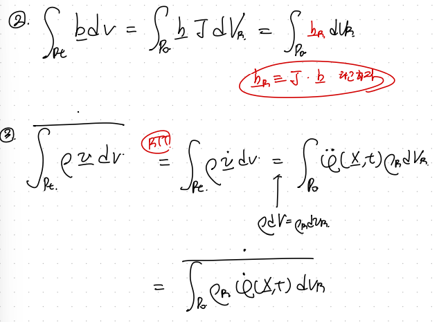

Ch6 Finite Deformation - part1 - Referential frame Momentum Balance Eq.
지금까지 우리는 small deformation가정을 빼먹지 않았다.
1. e = 1/2 *(gradu + gradu T)
2. Stress is a function of strain tensor
3. helmlotz free Energy is a function of strain tensor.
이제 부터는 위 가정에서 벗어난,
Finite deformation을 분석해보자.
천천히 단계별로 분석하자.
우리가 답하고 싶은 질문은
Q. Finite deformation에서 free E, stress는 strain과 어떤 관계가 있을까?
그 관계식은 어떤 form일까?????
즉 내가 물체에부여하는 힘, 에너지들이
이 물체의 움직임에 어떤 영향을 주는지를
수학적으로
표현하는게 결국 solid mechanics의 핵심이다.
여기서 위 물체의 움직임들 중에서
Finite Deformation
에 한해서
위 질문을 답해보자.
위답을 얻기 위해서 아래 4가지 과정을 차근차근 정리해야한다.
(그중에서 첫번째부터)
- Kinematics + Referential Momentum Balance Eq
-Frame Indifference in mechanics
-Balance Law
-Material Symmetry
1. Kinematics & Momentum Balance Eq (review ch4)
(Deep한 Kinematics contents are avaiable at the below links!!!)
https://jeffdissel.tistory.com/172
Ch2 Kinematics part1
지난 시간까지 기본적인 수학 symbol들과연산기호들에 대해서 알아보았다.(Vector, Tensor) 이 기호들로 우리는고체에 일어나는 물리현상들을 설명할 것이다. 위 의자에 굉장히 무거운 사람이
jeffdissel.tistory.com
https://jeffdissel.tistory.com/173
Ch2 Kinematics - part2
2.5 Strain tensor. 변형 전과 후의 body configuration 여기서, t =.0 일때의 두 위치벡터를 정의하고,t = 0 일때 두 점의 위치 X,Y 에 대해그 두 점을 잇는 단위벡터를 a0라고 정의하자.두 점의 길이는 de.
jeffdissel.tistory.com
간략하게 필요한 내용들만 뽑아서 정리해보자.

Configuration of deformed and refrence body
φ : Motion (Function maps X to x)
F : Deformation Gradient Tensor

그로부터 파생되는 C,B,U,V
Finite defomration에서 짚고 넘어가야할 중요한 개념은바로,
λ : principal strecthed
즉 순수히 물체가 3방향으로 늘어난 비율을 의미한다!.
(그 3방향은 principal direction of C, right Cauchy Green tensor)
다음 중요한 개념,
Velocity Gradient(L)
(small dermation에서 자주 나온다)
즉 공간적으로 속도의 변화를 나타내는 텐서.

Ch3에서 너무나도 많이 나온 Nansons' Formua
분명히 우리는 변형 전과 후의 면적 관계식을 유도하였다.

Nanson's formula Configuration, Reference and Spatial area.
조심해야할 부분이
(Vector dS는 방향은 surface의 법선과 같고, 크기는 면적인 벡터이다)

자 이제 위 도구들을 가지고
Momentum Conservation Equation부터 다루어보자.

ch3에서 배웠던 코시의 이론 -> 1,2번 식
+
ch4 에서 다루었던 3번식,
Cauchy's equation of Motion
먼저 ch4에서 증명하였던, Spatial Form의 Linear momentum conservation식은 다음과 같다.
surface force + body force = ma = total F on the body

위식의 총 3항 (traction, body force, acceleration term)을 하나씩
Spatial -> Referential로 전환해주자.

Transforming the traction integral term from Spatail to referential Frame.
자 여기서, Nanson's formula가 사용되며,
새로운 아주 중요한 stress tensor가 등장한다.
T_R = 1st Piola Stress
즉, frame을 변환시켰을때, stress tensor를 그에 맞추어 정의한 것.
Cauchy stress(T) - spatial frame
1st Piola Stress(T_R) - Referential frame
T_R = J T F ^(-T) 는 꼭 기억하자!!!!
T_R은 T와 다르게 Symmetric하지 않다는 점!!!

다시 돌아와서,
이제 남은 body force, acceleartion term도 referential frame으로 전환시키자.
(Continum Mechnaics에서 다루었던, RTT(Reynolds Transport Theorem) - below link.
+ volume change( dv = J dV) ) 가 쓰인다.
https://jeffdissel.tistory.com/176

자 이제 referential frame으로 바꾸었던 3 항을 Spatial balance Law에 대입해주면,

Integral을 전부 결합하면, 아래의
local form of Referentiall Momentum Balance EQ
이 유도된다.

이제 2번째 이야기를 다음포스터에서 살펴보자.
- Kinematics + Referential Momentum Balance Eq
-Frame Indifference in mechanics
-Balance Law
-Material Symmetry